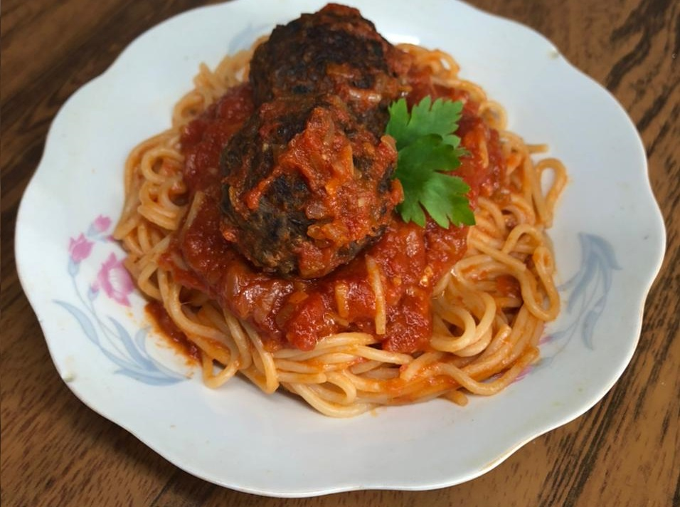

Lentil Meatballs.

Description:
This recipe comes from my childhood love of meatballs and my desire to create a veggie equivalent. It also comes from me realizing the lentil burger recipe made too many burgers and wanting to use the mix for something else.
The issue I had to solve was texture. Proper meatballs are hardened on the outside because of being baked or fried by themselves, and then wet and soft everywhere else from being on a red sauce. I think I nailed it.
As with any of my recipes, these meatballs do well in the freezer and are appropriate for meal prep.
Ingredients:
- One third of the lentil mix from step fourteen of this recipe.
- One egg.
- Two tablespoons of cornstarch.
- One tablespoon flour.
- Half a cup of bread crumbs.
- Frying oil.
Steps:
- Either fill half a pan with oil if you want to fry them, or preheat your oven for ten minutes and add some oil to a pan.
- Add and mix the flour, cornstarch, and bread crums to the lentil mix.
- Add the egg and mix well.
- Shape the mixture into balls and cook them until they're hard on the outside. If you bake them they'll stick to the pan until they're well cooked, so don't move them beforehand or you'll break them.
- Add to a boiling sauce, eat them as they are, or freeze them for later use.